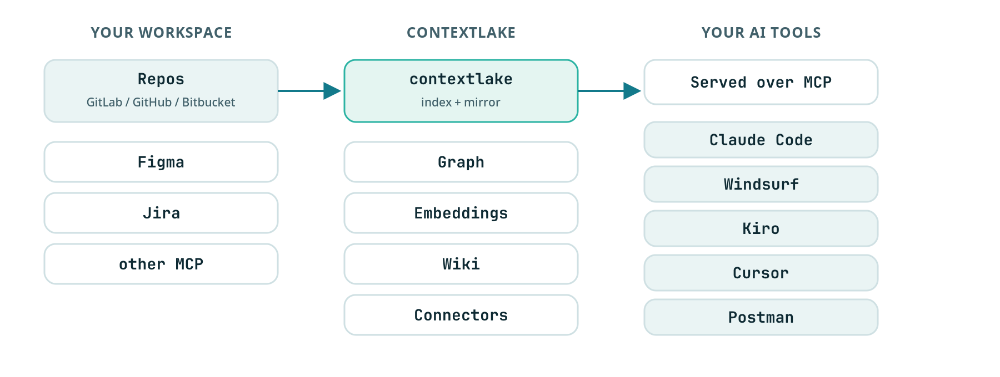

contextlake
A local context layer for your AI tools: mirror your repos, index them into a knowledge graph, and serve it over MCP.

Why contextlake#
Your AI assistant is only as good as what it can actually see. Point it at one file and it's sharp; ask it about the system, which service calls this API, who depends on that package, where a symbol is really defined across dozens of repos, and it starts guessing.
contextlake gives your tools the real source to read. It mirrors your repositories to your machine, indexes them into a queryable knowledge graph, and serves that graph to your editor over MCP. Everything runs locally and offline, no code leaves your machine, and it carries no credentials of its own.
How it works#
contextlake is three layers you adopt one at a time. The mirror is useful on its own, and each layer above it is optional.

-
Mirror. Clone every repo you can reach into a local copy of its namespace tree. Works with a GitLab group, a GitHub org, a Bitbucket workspace, or a Gitea, Codeberg or Forgejo owner. Each repo lands on its most active branch. One command keeps them fresh, and
contextlake schedule installmeasures a run and installs a background job entry that does it on its own. -
Knowledge layer (optional). Turn the mirror into a graph you can query.
- Code and dependencies across 27 languages, plus Terraform, SQL and PL/SQL schema, XML Schema, XSLT, Pro*C embedded SQL, and package manifests (npm, PyPI, NuGet, Maven).
- Semantic search, so you can find code by what it does, not just by its name.
- A wiki, reviewed and scored page by page. Pages that score low are dropped.
- Connectors to Atlassian, Figma, GitLab, Slack and Zendesk.
- Non-code content: Markdown and text, a PDF's text layer, text read out of images by a local OCR engine, and a video's slides and spoken track.
All of it runs locally. All of it is optional.
- Serve. Expose the result over MCP (the protocol AI tools use to call external tools),
plus an offline interactive graph viewer. Your agent can answer "where is
Xdefined?" or "who callsY?" instead of grepping.
Each layer has its own guide:
- Mirror repositories
- Configuration
- Knowledge layer
- QUICKSTART, the whole flow start to finish
Install#
pip install "contextlake[kb]" # the full tool: mirror + graph, search, wiki, MCP server
pip install contextlake # mirror-only core (one dependency: argcomplete)
Everything in the quickstart below needs the [kb] extra (Python 3.10+); the plain
install is just the mirroring CLI. Both need Python 3.10 or newer: one floor for the whole
tool, since the split floor the mirror core used to allow only ever surprised people.
Prefer an isolated, zero-setup install? uv fetches the right
Python and an isolated environment for you:
uv tool install "contextlake[kb]" # install the CLI on your PATH
uvx --from "contextlake[kb]" contextlake --help # …or run it once, without installing
# pipx install "contextlake[kb]" # pipx works too
Docker, the standalone binaries, the full extras table, upgrading, and uninstalling all live on one page: Install and upgrade. If an install misbehaves, see Troubleshooting.
Prerequisites: git, and, only for fleet mirroring, the platform's token env var
(GITLAB_TOKEN with read_api + read_repository, or GITHUB_TOKEN /
BITBUCKET_TOKEN / GITEA_TOKEN); on GitLab an authenticated
glab works instead. The knowledge layer needs
neither. Once installed, contextlake and python -m contextlake are equivalent;
python3 run-contextlake.py is a source-checkout launcher and is not part of the installed package.
Quickstart: one repo, no setup#
You don't need GitLab or any config to try contextlake on a repo you already have.
No install? Run it once with uvx: prefix any command
below with uvx --from "contextlake[kb]" (e.g. uvx --from "contextlake[kb]" contextlake kb index --source .).
contextlake kb index # parse the current repo into a local knowledge graph
contextlake kb graph --overview --open # open the graph (it names your repo's own view next)
contextlake kb serve # …or serve it to your AI IDE over MCP
Wire it into your editor in one line, no config file needed (it uses the local
~/.contextlake/kb store you just built):
claude mcp add contextlake-kb -- contextlake kb serve # Claude Code
# zero-install variant: claude mcp add contextlake-kb -- uvx --from "contextlake[kb]" contextlake kb serve

contextlake kb graph, a whole codebase as one offline, navigable graph.
Everything lands in a local store (~/.contextlake/kb), nothing leaves your machine. Index
any path with --source PATH, or every git repo under a directory with --workspace DIR.
Want the full path, mirror a GitLab fleet → graph → wired editor in a few minutes? QUICKSTART.md walks the whole flow.
Fleet mode: mirror a whole org#
Where contextlake goes beyond single-repo tools is mirroring and cross-referencing a whole fleet: a GitLab group, a GitHub org, a Bitbucket workspace, or a Gitea/Codeberg/Forgejo owner. Copy the example config and set your platform, group and workspace:
cp .contextlake.ini.example ~/.contextlake.ini
[contextlake]
work_dir = ~/work
gitlab_group = your-gitlab-group
# or any other platform:
# platform = github
# group = your-org
contextlake mirror status # see where you stand (read-only)
contextlake mirror sync # fetch → clone → update → branches → verify → audit
Auth is one environment variable. Set the token for your platform: GITLAB_TOKEN,
GITHUB_TOKEN, BITBUCKET_TOKEN or GITEA_TOKEN.
- The token travels in request headers and the child environment. Never in a URL, never in argv, so it cannot leak into your shell history or a process list.
.contextlake.iniholds only non-secret settings, and is gitignored by default.- On GitLab an authenticated
glabworks instead. Public orgs on other platforms need no token at all.
It mirrors hundreds of repos at once, with an adaptive worker pool and retries that back off. It will not touch the feature branch you are working on.
Behind a slow / TLS-inspecting corporate proxy (e.g. Zscaler) where
glab's API calls time out? SetGITLAB_TOKEN(aread_apitoken) and contextlake enumerates projects via its own HTTP client, which tolerates the slow DNS whereglab's short dial timeout fails.
Commands at a glance#
Run any command as contextlake <command>. Each one has its own help:
contextlake <command> --help.
Verbs sit under the noun they belong to:
mirrorfor mirroring git repositorieskbfor the knowledge layerinit,bootstrap,version,completion,doctorandschedulesit at the top, because they span both tiers or neither
Per-command docs live with their layer. The mirror commands are in Mirroring repositories. The knowledge-layer build commands get a page each: Indexing the code graph, Connecting and enriching, Searching semantically, Generating the wiki.
Global options work on any command: -v / -q for verbosity, --log-file PATH, and
--config PATH.
Two more look global and are not:
--dry-run, which previews without changing anything, belongs to the 8mirrorcommands plusbootstrap,doctorandkb forget.--versionbelongs to the barecontextlakeonly.contextlake versionis the form that works everywhere.
Pass either somewhere it does not exist, and the command exits 2 and names the commands that do
take it.
Output is colourised on a TTY and plain when piped. Set NO_COLOR to force it off.
For runs nobody watches, the systemd timer in examples/, cron, CI, there is a
second set: --log-format json (one JSON object per line, every line stamped with a run id),
--metrics-file PATH (Prometheus textfile-collector output), --redact (the --log-file copy
is already scrubbed of workspace paths, group and repo names), and --access-log. See
Reading the console output.
Knowledge layer#
Beyond mirroring, the optional contextlake.kb layer turns your repos into a knowledge graph
and serves it to AI tools over MCP. It can:
- link repos to the Atlassian, Figma, GitLab, Slack and Zendesk items, and the code symbols, that reference them
- add semantic search
- write a curated wiki
- visualise the graph as offline interactive HTML: a fleet overview, a symbol's neighbourhood, or a single repo
- generate per-tool steering files and a skills library
Most of it needs no model. The rest works with a local Ollama, or any OpenAI-compatible endpoint.
One command sets it all up (configs are read from their default locations):
contextlake bootstrap
Full guide: docs/knowledge-layer.md.
The dashboard#
contextlake kb dashboard --serve opens a local window into everything the knowledge layer
builds. It works offline. Tabs cover:
- a fleet overview, and per-repo anatomy
- the cross-repo architecture graph
- change impact, so you can see what a change would touch
- health and search
- Chat, to ask about the fleet in plain language
Chat answers from the graph for free. Prose written by a model is opt-in, with --llm-chat.
Want to look first? contextlake kb dashboard --serve --sample needs no setup at all.


The dashboard: a guided tour, step by step, with screenshots.
Local by default, and you can prove it#
There is no telemetry, no analytics, no usage reporting and no crash reporting in contextlake. There is nothing to opt out of, because there is nothing there.
That is easy for any project to type, so there is a switch that makes it checkable:
contextlake --offline kb index # or CONTEXTLAKE_OFFLINE=1
--offline refuses every outbound connection at the socket, so it covers not only
contextlake's own requests but every library in the process, including the ones that
download embedding or language models. Loopback stays open, because the MCP server, the
dashboard, the graph viewer and a local Ollama all live there.
Verified with the network blocked, on a fresh store: kb index, kb query, kb embed,
semantic search, and kb graph (whose HTML output contains no remote references at all).
The commands that genuinely need the network say so and stop rather than failing obscurely:
mirroring from a forge refuses up front, and bootstrap skips the mirror stage and builds
the knowledge layer from what is already on disk.
Two caveats, because they are the honest ones. The bundled embedding model is
downloaded from Hugging Face the first time it is used; that fetch needs the network, and
afterwards it loads from the local cache and semantic search works offline. And the wiki's
LLM tier is only as local as the provider you point it at: the built-in openvino-genai
model runs on your machine once cached, while --llm openai is a hosted API and --offline
will and should block it.
The boundary is worth stating plainly: this is an in-process guard, so git and glab
subprocesses have their own sockets. That is exactly why the mirror stages refuse up
front under --offline instead of relying on the guard. Everything above is covered by
tests that try to escape it, including one that goes out through urllib rather than
through any of our own helpers.
Two ways to reach outside are opt-in and named: a hosted model provider, if you
configure one instead of the bundled local model, and kb graph --cdn, which swaps the
inlined JavaScript for CDN script tags to make a smaller file. Default output inlines
everything and opens in an air-gapped browser.
Versioning and compatibility#
contextlake follows Semantic Versioning. From 8.0.0, no breaking change lands without a major bump, and 8.0.0 is out: the promise is in force. Breaks before it are named in CHANGELOG.md with what to change.
8.0.0 is the release the promise starts binding in, not a renumbering. A reset to 1.0.0 was considered and rejected: it would sort below every version already published, so nobody on 7.x would ever be offered it.
Four surfaces are covered. A change is breaking when it would stop something you wrote from working:
- CLI verbs and flags. Removing or renaming a verb, removing a flag, or changing what a
flag means. Adding a verb or a flag is not breaking. Tightening a flag's validation is
not breaking either: rejecting
--max-symbols 0, which silently meant "the default", is a fix for a value that never did what it said. - Store layout. Anything that makes an existing store unreadable to the version that wrote it, or that requires a manual migration. Re-indexing is not that.
- MCP tool contracts. Removing a tool, removing a field a result carried, or changing what a field means. Adding a field, or adding a tool, is not breaking.
- Config keys. Removing a key or changing its default in a way that changes what a run does.
PARSER_VERSION is deliberately not on that list, and the distinction is worth stating
because it looks like it should be. Bumping it does not stop anything working: your store
stays readable, every command keeps running, and nothing you wrote needs editing. What it
means is that repositories indexed by an older parser now carry less than the current one
would extract, so kb index rebuilds them instead of reporting them unchanged. doctor
reports that as an advisory, not a fault, because a parser bump would otherwise turn
every upgrade into a red check for something that is working correctly.
Documentation#
- QUICKSTART.md, install → bootstrap → wire your editor, in minutes
- docs/installing.md, every install channel, upgrading, and uninstalling
- docs/troubleshooting.md, it broke, now what
- docs/using-the-dashboard.md, the dashboard, a guided tour with screenshots
- docs/cli-reference.md, every command and flag, plus shell completion
- docs/console-output.md, decoding a run: glyphs, exit codes, JSON logs, metrics
- docs/configuration.md, where settings live and which one wins
- docs/mirroring-repositories.md, the mirror commands and branch safety
- docs/scheduling.md,
contextlake schedule, a self-installed background job on systemd, cron, launchd, Task Scheduler, Kubernetes, AWS or Azure - docs/knowledge-layer.md, the map over the four build stages below
- docs/indexing-the-code-graph.md,
kb index, and what the graph captures - docs/connecting-and-enriching.md,
kb connect/kb ingest/kb enrich, the nine source types - docs/searching-semantically.md,
kb embed/kb eval, vectors and retrieval quality - docs/generating-the-wiki.md,
kb wiki, the review council, per-subsystem pages - docs/generating-documentation.md,
kb docs, an API reference with real call sites, no model - docs/model-providers.md, choosing an embeddings and wiki backend
- docs/visualizing-the-graph.md,
kb graph, all 11 formats and the C4 diagram - docs/asking-the-graph.md,
kb query,kb impact,kb owners - docs/serving-over-mcp.md, serve the graph over MCP + wire your editor
- docs/keeping-it-fresh.md, bootstrap, scheduling, and re-indexing on commit
- docs/explained.md, what changes for you, and why it is built this way
- docs/benchmarks.md, where the token/cost/correctness impact comes from, and how to measure it yourself
- docs/internals.md, architecture and internals
- docs/releasing.md, maintainer runbook: versioning, tagging, publishing
- docs/style-guide.md, the documentation style guide (voice, structure, formatting, terms)
- docs/brand.md, palette, mascot, and asset usage
- CHANGELOG.md · ROADMAP.md · CONTRIBUTING.md · BRANDING.md
License#
MIT, see LICENSE. Pebble the otter is the project mascot; deep context, clear answers.